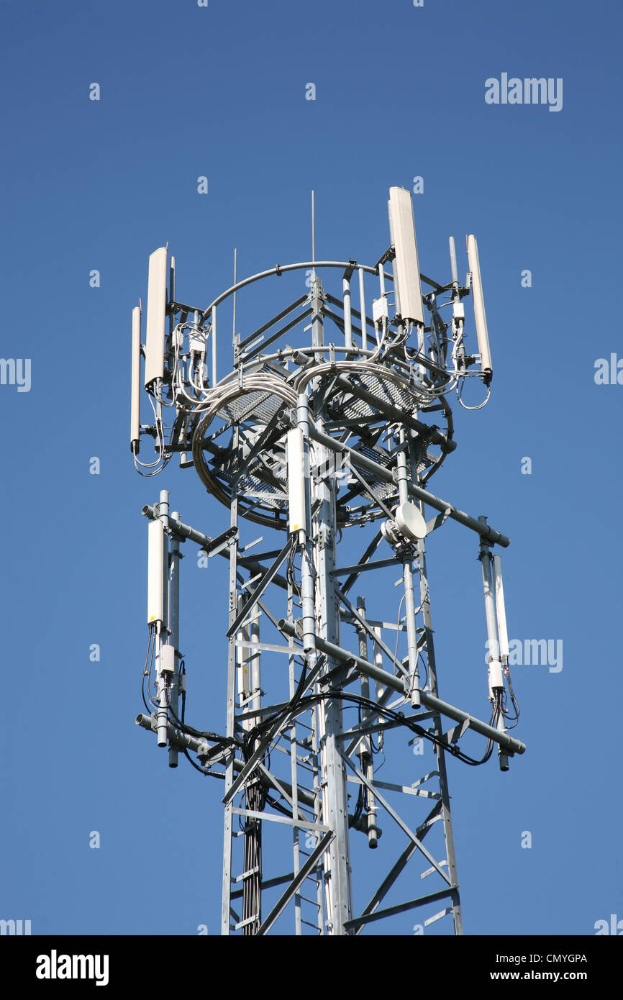

Similar to a network engineer, Tower Riggers are contracted by a Mobile Operating Company to install, maintain and replace Radio Antennas, its cabling and other equipment, as well as build the mast itself.
Telecommunications Engineer

You may see these engineers working in street Fibre Cabinets around the country, the job involves fixing outages/damage and routine maintenance/replacement of equipment.
Telecommunications Mast
A typical example of a mast featuring Cellular Antenna and equipment such as RRUs (Remote Radio Heads), Fibre Cabling, and Microwave dishes used for network backhaul linking.